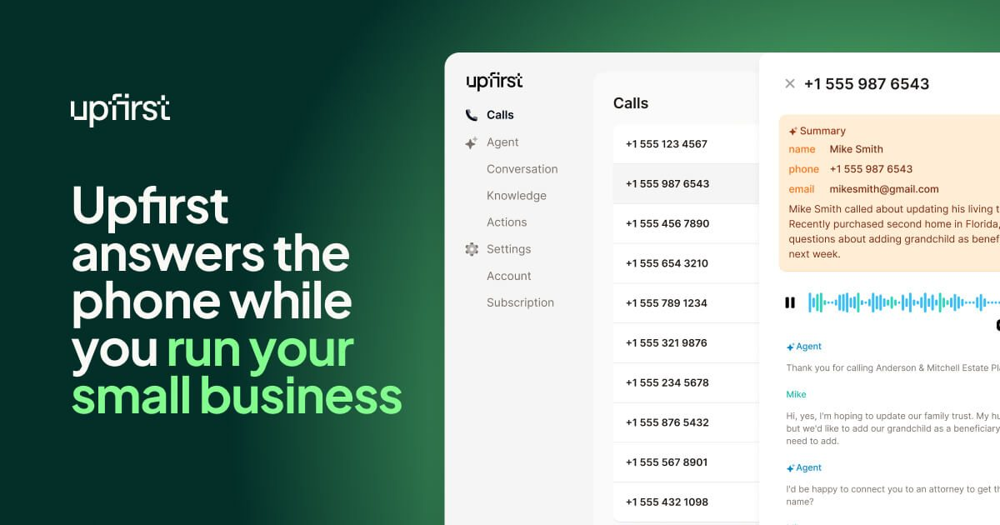

We first covered Upfirst in our introduction to AI receptionists. This is the full review: what every plan costs, what happens on a real call, where it falls short, and how to tell whether it will pay for itself in your business.
Why it matters: every call you miss is a lead you already paid to generate, through ads, referrals, your website or your truck wrap. We broke down the math in how missed calls turn into lost revenue. Upfirst’s job is to make sure that money doesn’t end up in voicemail.

What Upfirst Does on a Live Call
You forward your business number to Upfirst, either all the time or only when you don’t pick up. When a call comes in, the AI answers in your business’s name and handles it much like a trained front-desk person would:
- Answers 24/7: nights, weekends, holidays, and while you’re on a ladder or with a client.
- Captures the lead: name, number, what they need, and how urgent it is.
- Books appointments straight into your schedule.
- Transfers calls to you when a caller needs a human right away.
- Texts during the call: for example, a booking link or your address.
- Sends an instant summary with a recording and transcript, so you know exactly who to call back and why.
- Blocks spam so robocalls don’t eat your call allowance or your attention.
- Speaks 35+ languages and connects to your other tools through Zapier.
Upfirst Pricing (2026)
Upfirst charges by the number of calls, not by the minute. Every plan includes the full core feature set, and every plan starts with a 14-day free trial.
| Plan | Monthly | Billed annually | Calls included | Extra calls |
|---|---|---|---|---|
| Starter | $24.95 | $20/mo | 30 | $1.50 each |
| Premium | $59.95 | $48/mo | 90 | $1.00 each |
| Pro (most popular) | $159.95 | $128/mo | 300 | $0.75 each |
| Scale | $299 | $240/mo | 600 | $0.70 each |
| Custom | Quote | 600+ | Volume discounts | |
Pro adds white-glove onboarding and custom integrations. Custom adds priority support and BAAs for businesses with healthcare compliance needs.
Try Upfirst Free for 14 Days
Forward your line, let it answer real calls for two weeks, and read the summaries yourself.
Start Your Upfirst Free Trial →Pros and Cons
Pros
- Low entry price. $24.95/month is less than a day of a part-time receptionist.
- Full features on every plan. Booking, transfers, texting, transcripts and spam blocking aren’t locked behind upgrades.
- Instant summaries. You get the lead details right away, not whenever you get around to checking voicemail.
- Real free trial. 14 days with every feature turned on.
- Multilingual. 35+ languages, which matters in diverse service areas.
Cons
- Per-call pricing adds up at high volume. Busy offices should compare Pro or Scale against their actual monthly call count.
- Starter is tight. 30 calls is about one a day. Go over and extra calls cost $1.50 each.
- It’s AI, not a person. It handles routine intake well, but sensitive or complicated conversations may still need you on the line (use call transfer).
- It captures leads but doesn’t follow up on them. You still need a follow-up system after the call.
Upfirst vs. Voicemail vs. a Receptionist
| Voicemail | Human receptionist | Upfirst AI | |
|---|---|---|---|
| Answers after hours | No | Usually not | Yes, 24/7 |
| Captures caller details | Only if they leave a message | Yes | Yes, with a transcript |
| Books appointments | No | Yes | Yes |
| Handles calls at the same time | — | One at a time | Yes |
| Monthly cost | Free | Thousands per month | From $24.95 |
Who Upfirst Is Best For
- Home services and trades (HVAC, plumbing, roofing, cleaning, landscaping). You’re on the job when the phone rings.
- Solo professionals and consultants who can’t pick up during client meetings.
- Clinics, salons and studios where the front desk gets swamped at peak times.
- Any business running ads, because paying for clicks that go to voicemail is wasted spend.
Probably not a fit: businesses that get only a few calls a month, or ones where most calls need licensed advice on the spot.
Make Sure Every Captured Lead Gets a Follow-Up
Upfirst solves the first moment: the call gets answered. What happens next is where most businesses still lose the sale. Pair it with an automated follow-up system like the one in Why Most Small Businesses Fail at Follow-Up, so every caller gets a text, a reminder and a second touch without you having to remember.
Never Send Another Lead to Voicemail
Start with the 14-day free trial and see how many calls you’ve been missing.
Try Upfirst AI Answering → Automate Follow-Up with GoHighLevel →Frequently Asked Questions
How much does Upfirst cost?
Upfirst plans start at $24.95 per month for 30 calls (Starter), then $59.95 for 90 calls (Premium), $159.95 for 300 calls (Pro) and $299 for 600 calls (Scale). Paying annually lowers those to $20, $48, $128 and $240 per month. Extra calls cost $0.70 to $1.50 each depending on the plan.
Does Upfirst have a free trial?
Yes. Every plan includes a 14-day free trial with full feature access, so you can forward your business line and watch it handle real calls before paying.
Can Upfirst book appointments and transfer calls?
Yes. All plans include appointment scheduling, live call transfers, in-call texting, call recordings with transcripts, spam blocking, a Zapier integration and support for 35+ languages.
Is an AI answering service better than voicemail?
For most small businesses, yes. Many callers hang up instead of leaving a voicemail and call the next business on the list. An AI receptionist answers every call, captures the caller's details and need, and sends you a summary right away, so you can follow up while the lead is still warm.
Disclosure: JWAT Enterprises Inc may earn a commission if you sign up through links on this page, at no extra cost to you. Pricing and features were checked on September 27, 2026 and can change; confirm current terms on the provider’s site.
← Back to Blog